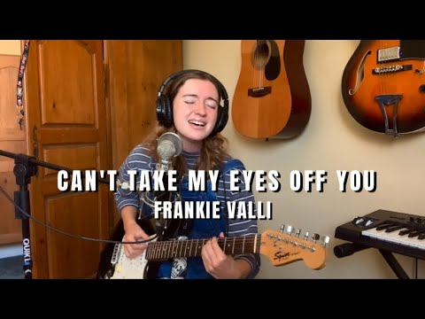

You're just too good to be true, I can't take my eyes off you
You'd be like heaven to touch, oh, I wanna hold you so much
At long last love has arrived, and I thank God I'm alive
You're just too good to be true, can't take my eyes off you.
Pardon the way that I stare
There's nothin' else to compare
The sight of you leaves me weak
There are no words left to speak
But if you feel like I feel
Please let me know that it's real
You're just too good to be true
Can't take my eyes off of you.